- Отрицательные числа
- Что такое множество?
- Общие сведения о неравенствах
- Системы линейных неравенств с одной переменной
- Пересечение множеств
- Объединение множеств
- Решение неравенств, содержащих знак ≠
- Решение совокупностей неравенств
- Задания для самостоятельного решения
Пересечение множеств
Рассмотрим два множества: множество друзей Джона и множество друзей Майкла.
| Друзья Джона = { | Том, Фред, Макс, Джорж } |
| Друзья Майкла = { | Лео, Том, Фред, Эван } |
Видим, что Том и Фред одновременно являются друзьями Джона и Майкла.
Говоря на языке множеств, элементы Том и Фред принадлежат как множеству друзей Джона, так и множеству друзей Майкла.
Зададим новое множество с названием «Общие друзья Джона и Майкла» и в качестве элементов добавим в него Тома и Фреда:
| Общие друзья Джона и Майкла | = { Том, Фред } |
В данном случае множество «Общие друзья Джона и Майкла» является пересечением множеств друзей Джона и Майкла.
Пересечением двух (или нескольких) исходных множеств называется множество, которое состоит из элементов, принадлежащих каждому из исходных множеств.
В нашем случае элементы Том и Фред принадлежат каждому из исходных множеств, а именно: множеству друзей Джона и множеству друзей Майкла.
Обозначим множество друзей Джона через букву A, множество друзей Майкла — через букву B, а множество общих друзей Джона и Майкла обозначим через букву C:
A = { Том, Фред, Макс, Джордж }
B = { Лео, Том, Фред, Эван }
C = { Том, Фред }
Тогда пересечением множеств A и B будет множество C и записываться следующим образом:
A ∩ B = C
Символ ∩ означает пересечение.
Говоря о множестве, обычно подразумевают элементы, принадлежащие этому множеству. Символ пересечения ∩ читается, как союз И. Тогда выражение A ∩ B = C можно прочитать следующим образом:
«Элементы, принадлежащие множеству A И множеству B, есть элементы, принадлежащие множеству C».
Или еще проще:
«Друзья, одновременно принадлежащие Джону И Майклу, есть общие друзья Джона и Майкла».
Теперь представим, что у Джона и Майкла нет общих друзей. Для удобства, как и прежде обозначим множество друзей Джона через букву A, а множество друзей Майкла через букву B
A = { Макс, Джордж }
B = { Лео, Эван }
В этом случае говорят, что исходные множества не имеют общих элементов и пересечением таких множеств является пустое множество. Пустое множество обозначается символом ∅
A ∩ B = ∅
Пример 2. Рассмотрим два множества: множество A, состоящее из чисел 1, 2, 3, 5, 7 и множество B, состоящее из чисел 1, 2, 3, 4, 6, 12, 18
A = { 1, 2, 3, 5, 7 }
B = { 1, 2, 3, 4, 6, 12, 18 }
Зададим новое множество C и добавим в него элементы, которые одновременно принадлежат множеству A и множеству B
C = { 1, 2, 3 }
Множество С является пересечением множеств A и B, поскольку элементы множества C одновременно принадлежат множеству A и множеству B
Пример 3. Рассмотрим два множества: множество A, состоящее из чисел 1, 5, 7, 9 и множество B, состоящее из чисел 1, 4, 5, 7
A = { 1, 5, 7, 9 }
B = { 1, 4, 5, 7 }
Зададим новое множество C и добавим в него элементы, которые одновременно принадлежат множеству A и множеству B
C = { 1, 5, 7 }
Множество С является пересечением множеств A и B, поскольку элементы множества C одновременно принадлежат множеству A и множеству B.
Пример 4. Найти пересечение следующих множеств:
A = { 1, 2, 3, 7, 9 }
B = { 1, 3, 5, 7, 9}
С = { 3, 4, 5, 8, 9}
Пересечением множеств A, B и C будет множество, состоящее из элементов, принадлежащих каждому из множеств A, B и C. Этими элементами являются числа 3 и 9.
Зададим новое множество D и добавим в него элементы 3 и 9. Затем с помощью символа пересечения ∩ запишем, что пересечением множеств A, B и C является множество D
D = { 3, 9}
A ∩ B ∩ C = D
Чтобы найти пересечение, вовсе необязательно задавать множества с помощью букв. Если элементов мало, то множество можно задать прямым перечислением элементов.
К примеру, пусть первое множество состоит из элементов 1, 3, 5, а второе из элементов 2, 3, 5. Пересечением в данном случае является множество, состоящее из элементов 3 и 5. Чтобы записать пересечение, можно воспользоваться прямым перечислением:
{ 1, 3, 5 } ∩ { 2, 3, 5 } = { 3, 5 }
Числовые промежутки, которые мы рассмотрели в предыдущих уроках, тоже являются множествами. Элементами таких множеств являются числа, входящие в числовой промежуток.
Например, отрезок [2; 6] можно понимать, как множество всех чисел от 2 до 6. Для наглядности можно перечислить все целые числа, принадлежащие данному отрезку:
2, 3, 4, 5, 6 ∈ [2; 6]
Следует иметь ввиду, что мы перечислили только целые числа. Отрезку [2; 6] также принадлежат и другие числа, не являющиеся целыми, например, десятичные дроби. Десятичные дроби располагаются между целыми числами, но их количество настолько велико, что перечислить их не представляется возможным.
Еще пример. Интервал (2; 6) можно понимать, как множество всех чисел от 2 до 6, кроме чисел 2 и 6. Ранее мы говорили, что интервал это такой числовой промежуток, границы которого не принадлежат ему. Для наглядности можно перечислить все целые числа, принадлежащие интервалу (2; 6):
3, 4, 5 ∈ (2; 6)
Поскольку числовые промежутки являются множествами, то мы можем находить пересечения между различными числовыми промежутками. Рассмотрим несколько примеров.
Пример 5. Даны два числовых промежутка: [2; 6] и [4; 8]. Найти их пересечение.
Оба промежутка обрамлены квадратными скобками, значит их границы принадлежат им.
Для наглядности перечислим все целые числа, принадлежащие промежуткам [2; 6] и [4; 8]:
2, 3, 4, 5, 6 ∈ [2; 6]
4, 5, 6, 7, 8 ∈ [4; 8]
Видно, что числа 4, 5, 6 принадлежат как первому промежутку [2; 6], так и второму [4; 8].
Тогда пересечением числовых промежутков [2; 6] и [4; 8] будет числовой промежуток [4; 6]
[2; 6] ∩ [4; 8] = [4; 6]
Изобразим промежутки [2; 6] и [4; 8] на координатной прямой. На верхней области отметим числовой промежуток [2; 6], на нижней — промежуток [4; 8]
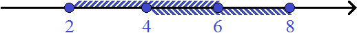
Видно, что числа, принадлежащие промежутку [4; 6], принадлежат как промежутку [2; 6], так и промежутку [4; 8]. Можно также заметить, что штрихи, входящие в промежутки [2; 6] и [4; 8] пересекаются в промежутке [4; 6]. В такой ситуации, когда перед глазами есть координатная прямая, понятие пересечения множеств можно понимать в прямом смысле что очень удобно.
Пример 6. Найти пересечение числовых промежутков [−2; 3] и [4; 7]
Оба промежутка обрамлены квадратными скобками, значит их границы принадлежат им.
Для наглядности перечислим все целые числа, принадлежащие промежуткам [−2; 3] и [4; 7]:
−2, −1, 0, 1, 2, 3 ∈ [−2; 3]
4, 5, 6, 7 ∈ [4; 7]
Видно, что числовые промежутки [−2; 3] и [4; 7] не имеют общих чисел. Поэтому их пересечением будет пустое множество:
[−2; 3] ∩ [4; 7] = Ø
Если изобразить числовые промежутки [−2; 3] и [4; 7] на координатной прямой, то можно увидеть, что они нигде не пересекаются:
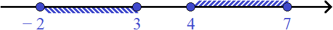
Пример 7. Дано множество из одного элемента { 2 }. Найти его пересечение с промежутком (−3; 4)
Множество, состоящее из одного элемента { 2 }, на координатной прямой изображается в виде закрашенного кружка, а числовой промежуток (−3; 4) это интервал, границы которого не принадлежат ему. Значит границы −3 и 4 будут изображаться в виде пустых кружков:
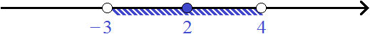
Пересечением множества { 2 } и числового промежутка (−3; 4) будет множество, состоящее из одного элемента { 2 }, поскольку элемент 2 принадлежит как множеству { 2 }, так и числовому промежутку (−3; 4)
{ 2 } ∩ (−3; 4) = { 2 }
На самом деле мы уже занимались пересечением числовых промежутков, когда решали системы линейных неравенств. Вспомните, как мы решали их. Сначала находили множество решений первого неравенства, затем множество решений второго. Затем находили множество решений, которые удовлетворяют обоим неравенствам.
По сути, множество решений, удовлетворяющих обоим неравенствам, является пересечением множеств решений первого и второго неравенства. Роль этих множеств берут на себя числовые промежутки.
Например, чтобы решить систему неравенств
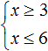
, мы должны сначала найти множества решений каждого неравенства, затем найти пересечение этих множеств.В данном примере решением первого неравенства x ≥ 3 является множество всех чисел, которые больше 3 (включая само число 3). Иначе говоря, решением неравенства является числовой промежуток [3; +∞)
Решением второго неравенства x ≤ 6 является множество всех чисел, которые меньше 6 (включая само число 6). Иначе говоря, решением неравенства является числовой промежуток (−∞; 6]
А общим решением системы будет пересечение множеств решений первого и второго неравенства, то есть пересечение числовых промежутков [3; +∞) и (−∞; 6]
Если мы изобразим множество решений системы на координатной прямой, то увидим, что эти решения принадлежат промежутку [3; 6], который в свою очередь является пересечением промежутков [3; +∞) и (−∞; 6]
[3; +∞) ∩ (−∞; 6] = [3; 6]
Поэтому в качестве ответа мы указывали, что значения переменной x принадлежат числовому промежутку [3; 6], то есть пересечению множеств решений первого и второго неравенства
x ∈ [3; 6]
Пример 2. Решить неравенство
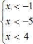
Все неравенства, входящие в систему уже решены. Нужно только указать те решения, которые являются общими для всех неравенств.
Решением первого неравенства является числовой промежуток (−∞; −1).
Решением второго неравенства является числовой промежуток (−∞; −5).
Решением третьего неравенства является числовой промежуток (−∞; 4).
Решением системы будет пересечение числовых промежутков (−∞; −1), (−∞; −5) и (−∞; 4). В данном случае этим пересечением является промежуток (−∞; −5).
(−∞; −1) ∩ (−∞; −5) ∩ (−∞; 4) = (−∞; −5)
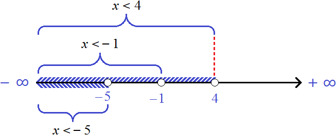
На рисунке представлены числовые промежутки и неравенства, которыми эти числовые промежутки заданы. Видно, что числа, принадлежащие промежутку (−∞; −5), одновременно принадлежат всем исходным промежуткам.
Запишем ответ к системе с помощью числового промежутка:
x ∈ (−∞; −5)
Пример 3. Решить неравенство
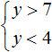
Решением первого неравенства y > 7 является числовой промежуток (7; +∞).
Решением второго неравенства y < 4 является числовой промежуток (−∞; 4).
Решением системы будет пересечение числовых промежутков (7; +∞) и (−∞; 4).
В данном случае пересечением числовых промежутков (7; +∞) и (−∞; 4) является пустое множество, поскольку эти числовые промежутки не имеют общих элементов:
(7; +∞) ∩ (−∞; 4) = ∅
Если изобразить числовые промежутки (7; +∞) и (−∞; 4) на координатной прямой, то можно увидеть, что они нигде не пересекаются:
Объединение множеств
Объединением двух (или нескольких) исходных множеств называют множество, которое состоит из элементов, принадлежащих хотя бы одному из исходных множеств.
На практике объединение множеств состоит из всех элементов, принадлежащих исходным множествам. Поэтому и говорят, что элементы такого множества принадлежат хотя бы одному из исходных множеств.
Рассмотрим множество A с элементами 1, 2, 3 и множество B с элементами 4, 5, 6.
A = { 1, 2, 3 }
B = { 4, 5, 6 }
Зададим новое множество C и добавим в него все элементы множества A и все элементы множества B
C = { 1, 2, 3, 4, 5, 6 }
В данном случае объединением множеств A и B является множество C и обозначается следующим образом:
A ∪ B = C
Символ ∪ означает объединение и заменяет собой союз ИЛИ. Тогда выражение A ∪ B = C можно прочитать так:
Элементы, принадлежащие множеству A ИЛИ множеству B, есть элементы, принадлежащие множеству C.
В определении объединения сказано, что элементы такого множества принадлежат хотя бы одному из исходных множеств. Данную фразу можно понимать в прямом смысле.
Вернёмся к созданному нами множеству C, куда входят все элементы множеств A и B. Возьмём для примера из этого множества элемент 5. Что можно про него сказать?
Если 5 является элементом множества C, а множество С является объединением множеств A и B, то можно с уверенностью заявить, что элемент 5 принадлежит хотя бы одному из множеств A и B. Так оно и есть:
A = { 1, 2, 3 }
B = { 4, 5, 6 }
C = { 1, 2, 3, 4, 5, 6 }
Возьмем ещё один элемент из множества С, например, элемент 2. Что можно про него сказать?
Если 2 является элементом множества C, а множество С является объединением множеств A и B, то можно с уверенностью заявить, что элемент 2 принадлежит хотя бы одному из множеств A и B. Так оно и есть:
A = {1, 2, 3}
B = {4, 5, 6}
C = { 1, 2, 3, 4, 5, 6 }
Если мы захотим объединить два или более множества и вдруг обнаружим, что один или несколько элементов принадлежат каждому из этих множеств, то в объединение повторяющиеся элементы будут входить только один раз.
Например, рассмотрим множество A с элементами 1, 2, 3, 4 и множество B с элементами 2, 4, 5, 6.
A = {1, 2, 3, 4}
B = {2, 4, 5, 6}
Видим, что элементы 2 и 4 одновременно принадлежат и множеству A, и множеству B. Если мы захотим объединить множества A и B, то новое множество C будет содержать элементы 2 и 4 только один раз. Выглядеть это будет так:
C = { 1, 2, 3, 4, 5, 6 }
Чтобы при объединении не допустить ошибок, обычно поступают так: сначала в новое множество добавляют все элементы первого множества, затем добавляют элементы второго множества, которые не принадлежат первому множеству. Попробуем сделать такое объединение с множествами A и B.
Итак, у нас имеются следующие исходные множества:
A = { 1, 2, 3, 4 }
B = { 2, 4, 5, 6 }
Зададим новое множество С и добавим в него все элементы множества A
C = { 1, 2, 3, 4,
Теперь добавим элементы из множества B, которые не принадлежат множеству A. Множеству A не принадлежат элементы 5 и 6. Их и добавим во множество C
C = { 1, 2, 3, 4, 5, 6 }
Пример 2. Друзьями Джона являются Том, Фред, Макс и Джордж. А друзьями Майкла являются Лео, Том, Фред и Эван. Найти объединение множеств друзей Джона и Майкла.
Для начала зададим два множества: множество друзей Джона и множество друзей Майкла.
| Друзья Джона = { | Том, Фред, Макс, Джорж } |
| Друзья Майкла = { | Лео, Том, Фред, Эван } |
Зададим новое множество с названием «Все друзья Джона и Майкла» и добавим в него всех друзей Джона и Майкла.
Заметим, что Том и Фред одновременно являются друзьями Джона и Майкла, поэтому мы добавим их в новое множество только один раз, поскольку сразу двух Томов и двух Фредов не бывает.
| Все друзья Джона и Майкла | = { Том, Фред, Макс, Джордж, Лео, Эван } |
В данном случае множество всех друзей Джона и Майкла является объединением множеств друзей Джона и Майкла.
Друзья Джона ∪ Друзья Майкла = Все друзья Джона и Майкла
Пример 3. Даны два числовых промежутка: [−7; 0] и [−3; 5]. Найти их объединение.
Оба промежутка обрамлены квадратными скобками, значит их границы принадлежат им.
Для наглядности перечислим все целые числа, принадлежащие этим промежуткам:
−7, −6, −5, −4, −3,−2, −1, 0 ∈ [−7; 0]
−3,−2, −1, 0, 1, 2, 3, 4, 5 ∈ [−3; 5]
Объединением числовых промежутков [−7; 0] и [−3; 5] будет числовой промежуток [−7; 5], который содержит все числа промежутка [−7; 0] и [−3; 5] без повторов некоторых из чисел
−7, −6, −5, −4, −3,−2, −1, 0, 1, 2, 3, 4, 5 ∈ [−7; 5]
Обратите внимание, что числа −3,−2, −1 принадлежали и первому промежутку и второму. Но поскольку в объединение допускается включать такие элементы только один раз, мы включили их единоразово.
Значит объединением числовых промежутков [−7; 0] и [−3; 5] будет числовой промежуток [−7; 5]
[−7; 0] ∪ [−3; 5] = [−7; 5]
Изобразим на координатной прямой промежутки [−7; 0] и [−3; 5]. На верхней области отметим числовой промежуток [−7; 0], на нижней — промежуток [−3; 5]
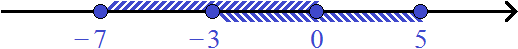
Ранее мы выяснили, что промежуток [−7; 5] является объединением промежутков [−7; 0] и [−3; 5]. Здесь полезно вспомнить про определение объединения множеств, которое было приведено в самом начале. Объединение трактуется, как множество, состоящее из всех элементов, принадлежащих хотя бы одному из исходных множеств.
Действительно, если взять любое число из промежутка [−7; 5], то окажется, что оно принадлежит хотя бы одному из промежутков: либо промежутку [−7; 0] либо промежутку [−3; 5].
Возьмём из промежутка [−7; 5] любое число, например число 2. Поскольку промежуток [−7; 5] является объединением промежутков [−7; 0] и [−3; 5], то число 2 будет принадлежать хотя бы одному из этих промежутков. В данном случае число 2 принадлежит промежутку [−3; 5]
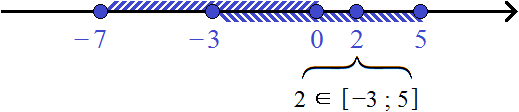
Возьмём ещё какое-нибудь число. Например, число −4. Это число будет принадлежать хотя бы одному из промежутков: [−7; 0] или [−3; 5]. В данном случае оно принадлежит промежутку [−7; 0]
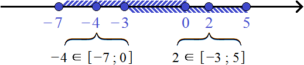
Возьмём ещё какое-нибудь число. Например, число −2. Оно принадлежит как промежутку [−7; 0], так и промежутку [−3; 5]. Но на координатной прямой оно указывается только один раз, поскольку в одной точке сразу два числа −2 не бывает.
Не каждое объединение числовых промежутков является числовым промежутком. Например, попробуем найти объединение числовых промежутков [−2; −1] и [4; 7].
Идея остаётся та же самая — объединением числовых промежутков [−2;−1] и [4; 7] будет множество, состоящее из элементов, принадлежащих хотя бы одному из промежутков: [−2; −1] или [4; 7]. Но это множество не будет являться числовым промежутком. Для наглядности перечислим все целые числа, принадлежащие этому объединению:
[−2; −1] ∪ [4; 7] = { −2, −1, 4, 5, 6, 7 }
Получили множество { −2, −1, 4, 5, 6, 7 }. Это множество не является числовым промежутком по причине того, что числа, располагающиеся между −1 и 4, не вошли в полученное множество
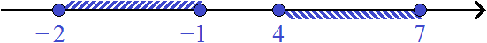
Числовой промежуток должен содержать все числа от левой границы до правой. Если одно из чисел отсутствует, то числовой промежуток теряет смысл. Допустим, имеется линейка длиной 15 см
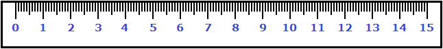
Эта линейка является числовым промежутком [0; 15], поскольку содержит все числа в промежутке от 0 до 15 включительно. Теперь представим, что на линейке после числа 9 сразу следует число 12.
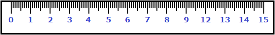
Эта линейка не является линейкой в 15 см, и её нежелательно использовать для измерения. Также, её нельзя назвать числовым промежутком [0; 15], поскольку она не содержит все числа, которые должна была содержать.
Решение неравенств, содержащих знак ≠
Некоторые неравенства содержат знак ≠ (не равно). Например, 2x ≠ 8. Чтобы решить такое неравенство, нужно найти множество значений переменной x, при которых левая часть не равна правой части.
Решим неравенство 2x ≠ 8. Разделим обе части данного неравенства на 2, тогда получим:
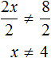
Получили равносильное неравенство x ≠ 4. Решением этого неравенства является множество всех чисел, не равных 4. То есть если мы подставим в неравенство x ≠ 4 любое число, которое не равно 4, то получим верное неравенство.
Подставим, например, число 5
5 ≠ 4 — верное неравенство, поскольку 5 не равно 4
Подставим 7
7 ≠ 4 — верное неравенство, поскольку 7 не равно 4
И поскольку неравенство x ≠ 4 равносильно исходному неравенству 2x ≠ 8, то решения неравенства x ≠ 4 будут подходить и к неравенству 2x ≠ 8. Подставим те же тестовые значения 5 и 7 в неравенство 2x ≠ 8.
2 × 5 ≠ 8
2 × 7 ≠ 8
Изобразим множество решений неравенства x ≠ 4 на координатной прямой. Для этого выколем точку 4 на координатной прямой, а всю оставшуюся область с обеих сторон выделим штрихами:
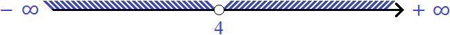
Теперь запишем ответ в виде числового промежутка. Для этого воспользуемся объединением множеств. Любое число, являющееся решением неравенства 2x ≠ 8 будет принадлежать либо промежутку (−∞; 4) либо промежутку (4; +∞). Так и записываем, что значения переменной x принадлежат (−∞; 4) или (4; +∞). Напомним, что для слова «или» используется символ ∪
x ∈ (−∞; 4) ∪ (4; +∞)
В этом выражении говорится, что значения, принимаемые переменной x, принадлежат промежутку (−∞; 4) или промежутку (4; +∞).
Неравенства, содержащие знак ≠, также можно решать, как обычные уравнения. Для этого знак ≠ заменяют на знак =. Тогда получится обычное уравнение. В конце решения найденное значение переменной x нужно исключить из множества решений.
Решим предыдущее неравенство 2x ≠ 8, как обычное уравнение. Заменим знак ≠ на знак равенства =, получим уравнение 2x = 8. Разделим обе части данного уравнения на 2, получим x = 4.
Видим, что при x, равном 4, уравнение обращается в верное числовое равенство. При других значениях равенства соблюдаться не будет. Эти другие значения нас и интересуют. А для этого достаточно исключить найденную четвёрку из множества решений.
Пример 2. Решить неравенство 3x − 5 ≠ 1 − 2x
Перенесем −2x из правой части в левую часть, изменив знак, а −5 из левой части перенесём в правую часть, опять же изменив знак:
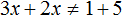
Приведем подобные слагаемые в обеих частях:
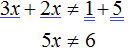
Разделим обе части получившегося неравенства на 5
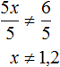
Решением неравенства x ≠ 1,2 является множество всех чисел, не равных 1,2.
Изобразим множество решений неравенства x ≠ 1,2 на координатной прямой и запишем ответ в виде числового промежутка:
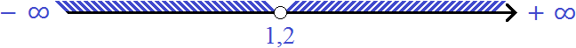
x ∈ (−∞; 1,2) ∪ (1,2; +∞)
В этом выражении говорится, что значения, принимаемые переменной x принадлежат промежутку (−∞; 1,2) или промежутку (1,2; +∞)
Решение совокупностей неравенств
Рассмотрим ещё один вид неравенств, который называется совокупностью неравенств. Такой тип неравенств, возможно, вы будете решать редко, но для общего развития полезно изучить и их.
Совокупность неравенств очень похожа на систему неравенств. Различие в том, что в системе неравенств нужно найти множество решений, удовлетворяющих каждому неравенству, образующему эту систему.
А в случае с совокупностью неравенств, нужно найти множество решений, удовлетворяющих хотя бы одному неравенству, образующему эту совокупность.
Совокупность неравенств обозначается квадратной скобкой. Например, следующая запись из двух неравенств является совокупностью:
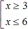
Решим данную совокупность. Сначала нужно решить каждое неравенство по отдельности.
Решением первого неравенства x ≥ 3 является числовой промежуток [3; +∞). Решением второго неравенства x ≤ 6 является числовой промежуток (−∞; 6].
Множество значений x, при которых верно хотя бы одно из неравенств, будет принадлежать промежутку [3; +∞) или промежутку (−∞; 6]. Так и записываем:
x ∈ [3; +∞) ∪ (−∞; 6]
В этом выражении говорится, что переменная x, входящая в
совокупность принимает все значения, принадлежащие промежутку [3; +∞) или промежутку (−∞; 6]. А это то, что нам нужно. Ведь решить совокупность означает найти множество решений, удовлетворяющих хотя бы одному неравенству, образующему эту совокупность. А любое число из промежутка [3; +∞) или промежутка (−∞; 6] будет удовлетворять хотя бы одному неравенству.
Например, число 9 из промежутка [3; +∞) удовлетворяет первому неравенству x ≥ 3. А число −7 из промежутка (−∞; 6] удовлетворяет второму неравенству x ≤ 6.
Посмотрите внимательно на выражение x ∈ [3; +∞) ∪ (−∞; 6], а именно на его правую часть. Ведь выражение [3; +∞) ∪ (−∞; 6] представляет собой объединение числовых промежутков [3; +∞) и (−∞; 6]. Точнее, объединение множеств решений первого и второго неравенства.
Стало быть, решением совокупности неравенств является объединение множеств решений первого и второго неравенства.
Иначе говоря, решением совокупности будет объединение числовых промежутков [3; +∞) и (−∞; 6]
Объединением числовых промежутков [3; +∞) и (−∞; 6] является промежуток (−∞; +∞). Точнее, объединением числовых промежутков [3; +∞) и (−∞; 6] является вся координатная прямая. А вся координатная прямая это все числа, которые только могут быть
[3; +∞) ∪ (−∞; 6] = (−∞; +∞)
Ответ можно оставить таким, каким мы его записали ранее:
x ∈ [3; +∞) ∪ (−∞; 6]
либо заменить на более короткий:
x ∈ (−∞; +∞)
Возьмём любое число из полученного объединения, и проверим удовлетворяет ли оно хотя бы одному неравенству.
Возьмем для примера число 8. Оно удовлетворяет первому неравенству x ≥ 3.
8 ≥ 3
Возьмем еще какое-нибудь число, например, число 1. Оно удовлетворяет второму неравенству x ≤ 6
1 ≤ 6
Возьмем еще какое-нибудь число, например, число 5. Оно удовлетворяет и первому неравенству x ≥ 3 и второму x ≤ 6
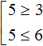
Пример 2. Решить совокупность неравенств
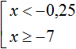
Чтобы решить эту совокупность, нужно найти множество решений, которые удовлетворяют хотя бы одному неравенству, образующему эту совокупность.
Для начала найдём множество решений первого неравенства x < −0,25. Этим множеством является числовой промежуток (−∞; −0,25).
Множеством решений второго неравенства x ≥ −7 является числовой промежуток [−7; +∞).
Решением совокупности неравенств будет объединение множеств решений первого и второго неравенства.
x ∈ (−∞; −0,25) ∪ [−7; +∞)
Иначе говоря, решением совокупности будет объединение числовых промежутков (−∞; −0,25) и [−7; +∞)
Объединением числовых промежутков (−∞; −0,25) и [−7; +∞) является является вся координатная прямая. А вся координатная прямая это все числа, которые только могут быть
(−∞; −0,25) ∪ [−7; +∞) = (−∞; +∞)
Ответ можно оставить таким, каким мы его записали ранее:
x ∈ (−∞; −0,25) ∪ [−7; +∞)
либо заменить на более короткий:
x ∈ (−∞; +∞)
Пример 3. Решить совокупность неравенств
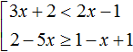
Решим каждое неравенство по отдельности:
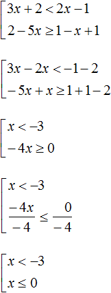
Множеством решений первого неравенства x < −3 является числовой промежуток (−∞; −3).
Множеством решений второго неравенства x ≤ 0 является числовой промежуток (−∞; 0].
Решением совокупности неравенств
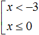
будет объединение множеств решений первого и второго неравенства.x ∈ (−∞; −3) ∪ (−∞; 0]
Иначе говоря, решением совокупности будет объединение числовых промежутков (−∞; −3) и (−∞; 0]
Объединением числовых промежутков (−∞; −3) и (−∞; 0] является числовой промежуток (−∞; 0]
(−∞; −3) ∪ (−∞; 0] = (−∞; 0]
Ответ можно оставить таким, каким мы его записали ранее:
x ∈ (−∞; −3) ∪ (−∞; 0]
либо заменить на более короткий:
x ∈ (−∞; 0]
Задания для самостоятельного решения
B = { 3, 4, 5 }
Показать решение
A ∪ B = { 1, 2, 3, 4, 5 }
B = { 1, 2, 3, 4, 5 }
Показать решение
A ∪ B = { −3, −2, −1, 0, 1, 2, 3, 4, 5 }
B = { 3, 4 }
Показать решение
A ∪ B = { 1, 2, 3, 4 }
Показать решение
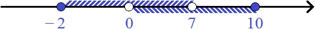
[−2; 7) ∩ (0; 10] = (0; 7)
[−2; 7) ∪ (0; 10] = [−2; 10]
Показать решение
(−∞; 3] ∩ [−2; 1) = [−2; 1)
(−∞; 3] ∪ [−2; 1) = (−∞; 3]
Показать решение
(3; +∞) ∩ [2; +∞) = (3; +∞)
(3; +∞) ∪ [2; +∞) = [2; +∞)
Показать решение
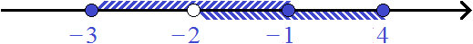
[−3; −1] ∩ (−2; 4] = (−2; −1]
[−3; −1] ∪ (−2; 4] = [−3; 4]
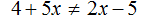
Показать решение
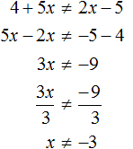
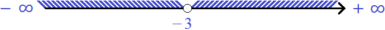
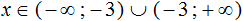
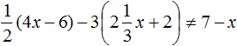
Показать решение
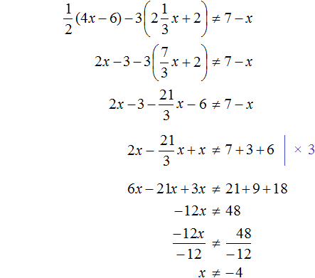
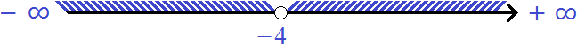
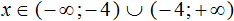
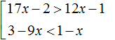
Показать решение
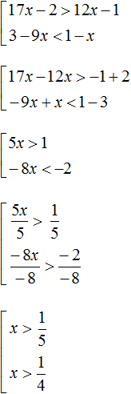

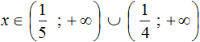
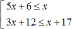
Показать решение
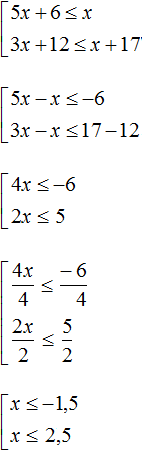

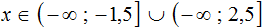
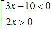
Показать решение
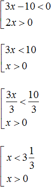
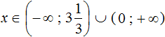
Понравился урок?
Вступай в нашу новую группу Вконтакте и начни получать уведомления о новых уроках
Возникло желание поддержать проект?
Используй кнопку ниже